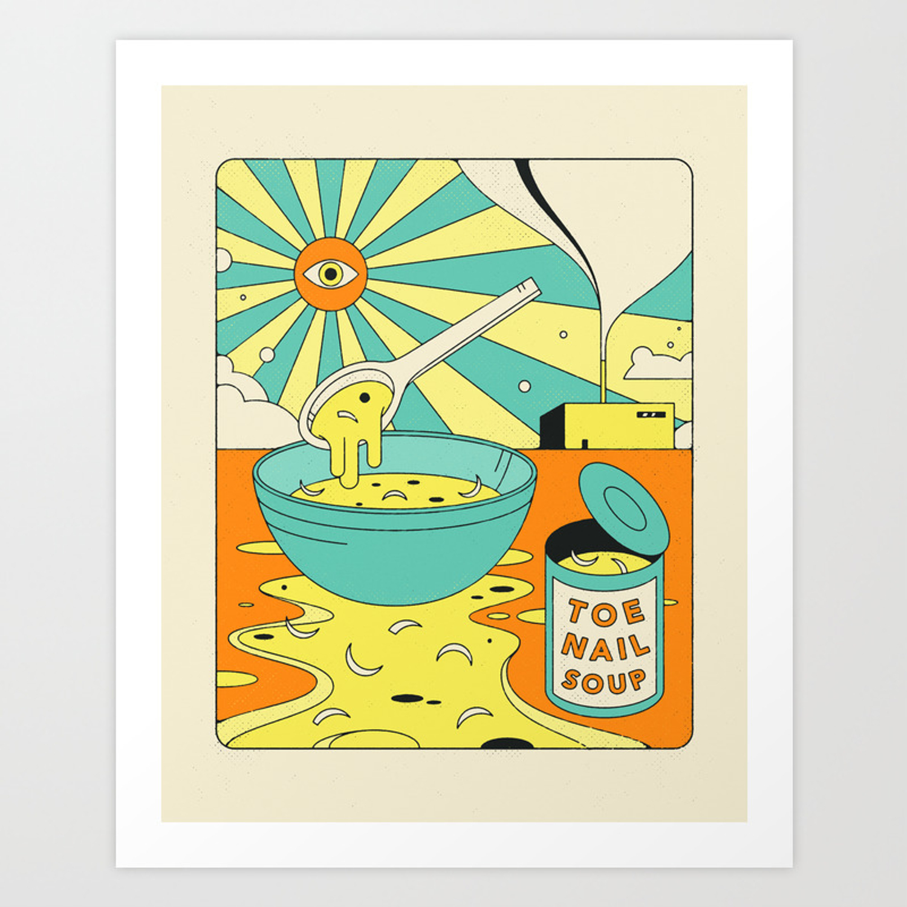

Toenail Soup

Back
Description
Toenail Soup is a tradtional dish in troll households its been consumed for years. It is thought grant humans special gifts that may help us with our daily task.
Ingredients
- Sea Water
- Oysters
- Onions
- Toenails
Steps
- Boil Water
- Put Oysters, Onions, and Toenails in boiling water
- After boiling put in tin can and enjoy. :)